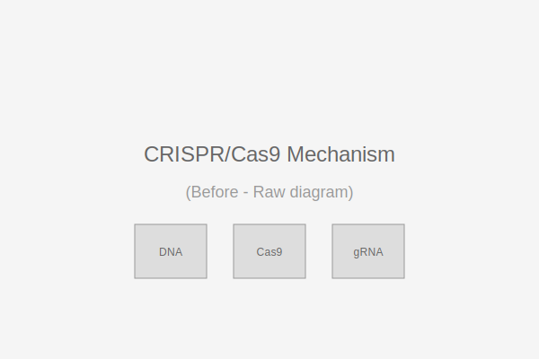
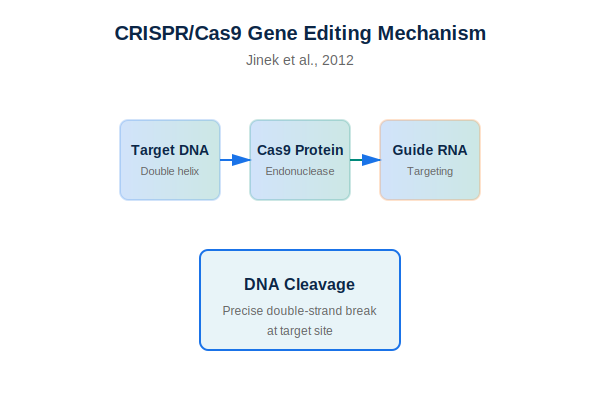

CRISPR/Cas9 — Mecanismo de edição genética
Antes
Depois
Esquemas mecanísticos refinados do paper original do CRISPR-Cas9 (Jinek et al., 2012). Cores acessíveis, hierarquia clara e anotações precisas.
Ver checklist Nature
Checklist de conformidade — Nature
Esta checklist ajuda a garantir que figuras estejam alinhadas com as expectativas de periódicos como Nature.
- Resolução mínima para print: 300–450 dpi
- Fontes legíveis (sans-serif recomendada) e tamanhos consistentes (legenda ≥ 8 pt para figuras em coluna única)
- Cores testadas para daltonismo (usar paletas seguras)
- Elementos não essenciais removidos (bordas desnecessárias, grades pesadas)
- Painéis rotulados A, B, C... com alinhamento consistente
- Legenda clara com unidades e escalas
- Arquivos de entrega: PNG (web), TIFF ou PDF (print), SVG (vetorial) e arquivo editável (AI/FIG/SVG com fontes convertidas ou fornecidas)
- Tamanho e proporção compatíveis com as guidelines específicas do artigo (single/double column)
Observação: Quando em dúvida, priorizar legibilidade em impressão e consistência tipográfica.